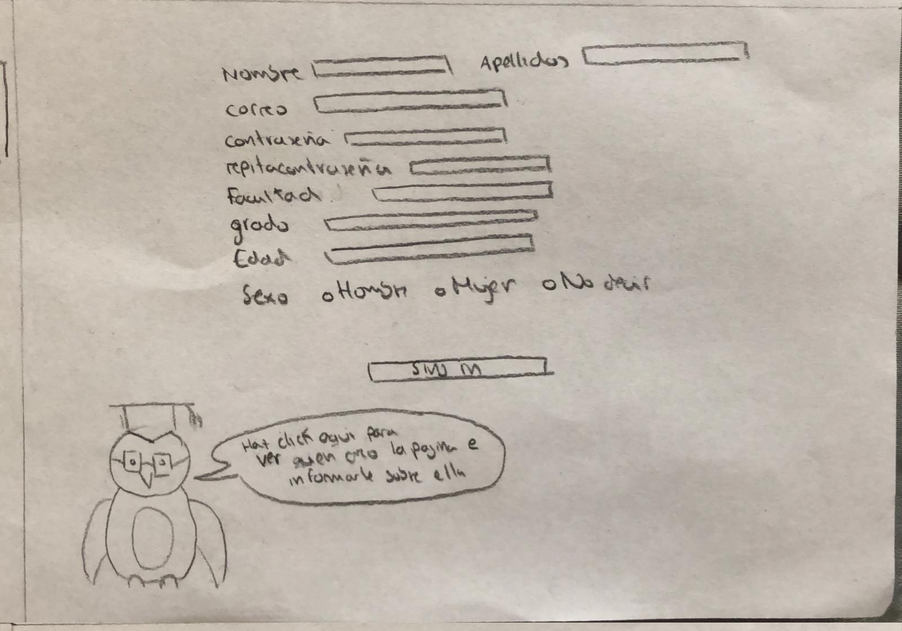
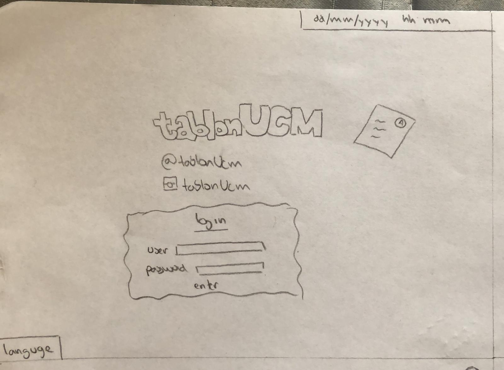

Esta es la pantalla inicial que se ve nada más entrar en la web. Arriba a la derecha podemos encontrar las opciones de "log in" y "registro". En el centro se encuentra nuestro logo.
En esta página aparece el formulario de registro para crearte una cuenta en nuestra web.
En esta página se muestran las redes sociales de la página y el formulario para "log in". También podremos cambiar el idioma. Arriba a la derecha se podrá ver la hora y fecha actual.

Una vez te has registrado podrás ver una foto de tu facultad. Arriba a la derecha podrás pinchar y acceder a tu perfil donde podrás ver y cambiar tus datos. Además, podrás seleccionar el curso que quieras y al pinchar sobre el se desplegarán una lista de las asignaturas que hayas elegido como "favoritas" y podrás entrar para ver/subir/descargar diferentes apuntes. A la derecha se tendrá un calendario de eventos.